[1]:
import os,sys
%matplotlib inline
import matplotlib.pylab as plt
import pickle
plt.rcParams['figure.dpi'] = 100
plt.rcParams['savefig.dpi']=300
sys.path.append(os.path.expanduser("~/Projects/Github/PyComplexHeatmap"))
import PyComplexHeatmap
print(PyComplexHeatmap.__version__)
from PyComplexHeatmap import *
1.7.2.dev0+g8abf70a.d20240415
[2]:
#set font to Arial using the following code
plt.rcParams['font.family']='sans serif'
plt.rcParams['font.sans-serif']='Arial'
# set pdf.fonttype to 42
plt.rcParams['pdf.fonttype']=42
Understand the layout:¶
[3]:
#Generate example dataset (random)
df = pd.DataFrame(['GroupA'] * 5 + ['GroupB'] * 5, columns=['AB'])
df['CD'] = ['C'] * 3 + ['D'] * 3 + ['G'] * 4
df['EF'] = ['E'] * 6 + ['F'] * 2 + ['H'] * 2
df['F'] = np.random.normal(0, 1, 10)
df.index = ['sample' + str(i) for i in range(1, df.shape[0] + 1)]
df_box = pd.DataFrame(np.random.randn(10, 4), columns=['Gene' + str(i) for i in range(1, 5)])
df_box.index = ['sample' + str(i) for i in range(1, df_box.shape[0] + 1)]
df_bar = pd.DataFrame(np.random.uniform(0, 10, (10, 2)), columns=['TMB1', 'TMB2'])
df_bar.index = ['sample' + str(i) for i in range(1, df_box.shape[0] + 1)]
df_scatter = pd.DataFrame(np.random.uniform(0, 10, 10), columns=['Scatter'])
df_scatter.index = ['sample' + str(i) for i in range(1, df_box.shape[0] + 1)]
df_heatmap = pd.DataFrame(np.random.randn(30, 10), columns=['sample' + str(i) for i in range(1, 11)])
df_heatmap.index = ["Fea" + str(i) for i in range(1, df_heatmap.shape[0] + 1)]
df_heatmap.iloc[1, 2] = np.nan
[4]:
#Annotate the rows with average > 0.3
df_rows = df_heatmap.apply(lambda x:x.name if x.sample4 > 0.5 else None,axis=1)
df_rows=df_rows.to_frame(name='Selected')
df_rows['XY']=df_rows.index.to_series().apply(lambda x:'A' if int(x.replace('Fea',''))>=15 else 'B')
row_ha = HeatmapAnnotation(
S4=anno_simple(df_heatmap.sample4.apply(lambda x:round(x,2)),
height=10,#add_text=True,
text_kws={'rotation':0,'fontsize':10,'color':'black'}),
Test=anno_barplot(df_heatmap.sample4.apply(lambda x:round(x,2)),
height=18,cmap='rainbow'),
selected=anno_label(df_rows,colors='red',relpos=(0,0.5)),
axis=0,verbose=0,wgap=4,label_kws={'rotation':0,'horizontalalignment':'left',
'verticalalignment':'bottom'})
col_ha = HeatmapAnnotation(
label=anno_label(df.AB, merge=True,rotation=15),
AB=anno_simple(df.AB,add_text=True,height=5),axis=1,
CD=anno_simple(df.CD,add_text=True,height=5),
EF=anno_simple(df.EF,add_text=True,height=5,
legend_kws={'frameon':False}),
Exp=anno_boxplot(df_box, cmap='turbo',grid=True),
verbose=0,hgap=2) #verbose=0 will turn off the log.
plt.figure(figsize=(6, 8))
cm = ClusterMapPlotter(
data=df_heatmap, top_annotation=col_ha,right_annotation=row_ha,
col_split=df.AB,
row_split=df_rows.XY,
col_split_gap=3.5,row_split_gap=2.5,
col_cluster=True,row_cluster=True,
label='values',row_dendrogram=False,
show_rownames=True,show_colnames=True,
verbose=0,legend_gap=5,legend_hpad=10,legend_vpad=5,
#annot=True,fmt='.1g',linewidths=0.05,linecolor='gold',
cmap='RdYlBu_r',
xticklabels_kws={'labelrotation':-45,'labelcolor':'blue'},
yticklabels_kws=dict(labelcolor='red',pad=20),
subplot_gap=8,
xlabel='Samples',xlabel_kws=dict(color='white',fontsize=14,labelpad=25,position=(0,0)),
xlabel_bbox_kws=dict(facecolor='black'),ylabel_bbox_kws=dict(facecolor='green'),
ylabel='Features',ylabel_kws=dict(color='black',fontsize=14,labelpad=45,position=(0,0)),
)
for ax,color in zip([cm.ax,cm.ax_heatmap,cm.ax_top,cm.ax_right],['red','purple','blue','chocolate']):
for side in ["top", "right", "left", "bottom"]:
ax.set_axis_on()
# ax.yaxis.set_visible(True)
# ax.xaxis.set_visible(True)
ax.spines[side].set_visible(True)
ax.spines[side].set_color(color)
ax.spines[side].set_linewidth(2)
ax.spines[side].set_linestyle('--')
plt.show()
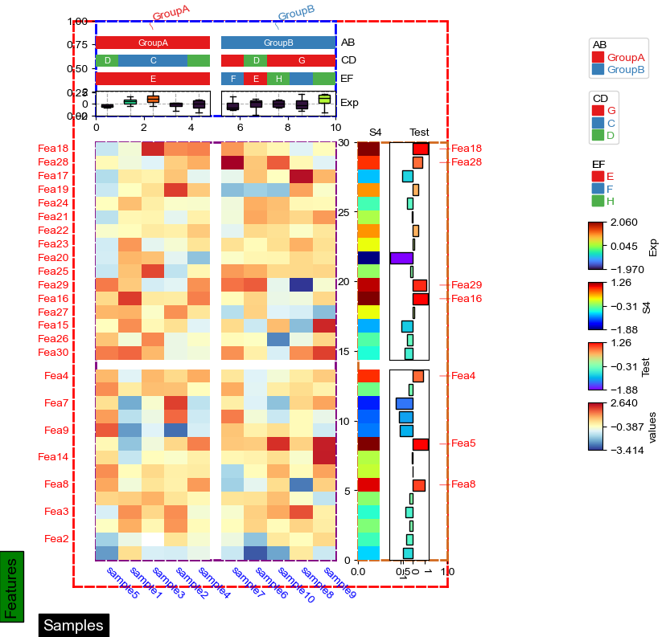
[5]:
cm.ax.xaxis.label.properties()
[5]:
{'agg_filter': None,
'alpha': None,
'animated': False,
'bbox_patch': <matplotlib.patches.FancyBboxPatch at 0x7fb4d5a69fa0>,
'children': [],
'clip_box': None,
'clip_on': True,
'clip_path': None,
'color': 'white',
'figure': <Figure size 600x800 with 31 Axes>,
'fontfamily': ['sans serif'],
'fontname': 'Arial',
'fontproperties': <matplotlib.font_manager.FontProperties at 0x7fb4d59faee0>,
'fontsize': 14.0,
'fontstyle': 'normal',
'fontvariant': 'normal',
'fontweight': 'normal',
'gid': None,
'horizontalalignment': 'center',
'in_layout': True,
'label': '',
'math_fontfamily': 'dejavusans',
'mouseover': False,
'parse_math': True,
'path_effects': [],
'picker': None,
'position': (0, 23.000000000000007),
'rasterized': False,
'rotation': 0.0,
'rotation_mode': None,
'sketch_params': None,
'snap': None,
'stretch': 'normal',
'text': 'Samples',
'tightbbox': Bbox([[37.125, 5.000000000000007], [112.875, 23.000000000000007]]),
'transform': <matplotlib.transforms.BlendedAffine2D at 0x7fb4d59faf70>,
'transform_rotates_text': False,
'transformed_clip_path_and_affine': (None, None),
'unitless_position': (0.0, 23.000000000000007),
'url': None,
'usetex': False,
'verticalalignment': 'top',
'visible': True,
'window_extent': Bbox([[37.125, 5.000000000000007], [112.875, 23.000000000000007]]),
'wrap': False,
'zorder': 3}
[6]:
cm.ax.xaxis.label.get_bbox_patch().properties()
[6]:
{'agg_filter': None,
'alpha': None,
'animated': False,
'antialiased': True,
'bbox': Bbox([[0.0, 0.0], [75.75, 18.0]]),
'boxstyle': <matplotlib.patches.BoxStyle.Square at 0x7fb4d5f01b20>,
'capstyle': 'butt',
'children': [],
'clip_box': None,
'clip_on': True,
'clip_path': None,
'data_transform': <matplotlib.transforms.Affine2D at 0x7fb4d69d2430>,
'edgecolor': (0.0, 0.0, 0.0, 1.0),
'extents': Bbox([[47.54166666666667, -0.6388888888888813], [134.56944444444446, 28.638888888888896]]),
'facecolor': (0.0, 0.0, 0.0, 1.0),
'figure': None,
'fill': True,
'gid': None,
'hatch': None,
'height': 18.0,
'in_layout': True,
'joinstyle': 'miter',
'label': '',
'linestyle': 'solid',
'linewidth': 1.0,
'mouseover': False,
'mutation_aspect': 1,
'mutation_scale': 19.444444444444443,
'patch_transform': <matplotlib.transforms.IdentityTransform at 0x7fb4d59874c0>,
'path': Path(array([[-5.63888889, -5.63888889],
[81.38888889, -5.63888889],
[81.38888889, 23.63888889],
[-5.63888889, 23.63888889],
[-5.63888889, -5.63888889]]), array([ 1, 2, 2, 2, 79], dtype=uint8)),
'path_effects': [],
'picker': None,
'rasterized': False,
'sketch_params': None,
'snap': None,
'tightbbox': Bbox([[47.54166666666667, -0.6388888888888813], [134.56944444444446, 28.638888888888896]]),
'transform': <matplotlib.transforms.Affine2D at 0x7fb4d69d2430>,
'transformed_clip_path_and_affine': (None, None),
'url': None,
'verts': array([[ 47.54166667, -0.63888889],
[134.56944444, -0.63888889],
[134.56944444, 28.63888889],
[ 47.54166667, 28.63888889],
[ 47.54166667, -0.63888889]]),
'visible': True,
'width': 75.75,
'window_extent': Bbox([[47.54166666666667, -0.6388888888888813], [134.56944444444446, 28.638888888888896]]),
'x': 0.0,
'y': 0.0,
'zorder': 1}
Test dendrogram¶
[7]:
from scipy.cluster import hierarchy
[8]:
Index= ['aaa','bbb','ccc','ddd','eee']
Cols = ['A', 'B', 'C','D']
df = pd.DataFrame(abs(np.random.randn(5, 4)), index= Index, columns=Cols)
df
[8]:
| A | B | C | D | |
|---|---|---|---|---|
| aaa | 1.162311 | 1.311971 | 0.284706 | 1.206202 |
| bbb | 0.218931 | 0.177535 | 1.739165 | 0.002853 |
| ccc | 0.621873 | 0.050180 | 1.301119 | 0.407408 |
| ddd | 0.235829 | 0.085177 | 1.837528 | 1.094667 |
| eee | 1.052342 | 1.310365 | 0.430963 | 1.227427 |
[9]:
df = pd.DataFrame(['GroupA'] * 5 + ['GroupB'] * 5, columns=['AB'])
df['CD'] = ['C'] * 3 + ['D'] * 3 + ['G'] * 4
df['EF'] = ['E'] * 6 + ['F'] * 2 + ['H'] * 2
df['F'] = np.random.normal(0, 1, 10)
df.index = ['sample' + str(i) for i in range(1, df.shape[0] + 1)]
df_heatmap = pd.DataFrame(np.random.randn(30, 10), columns=['sample' + str(i) for i in range(1, 11)])
df_heatmap.index = ["Fea" + str(i) for i in range(1, df_heatmap.shape[0] + 1)]
df_heatmap.iloc[1, 2] = np.nan
plt.figure(figsize=(3.5, 5))
cm = ClusterMapPlotter(
data=df_heatmap.fillna(0),
col_cluster=True,row_cluster=True,
# col_split=df.AB,
row_split=2,
col_split_gap=0.5,row_split_gap=0.8,
label='values',row_dendrogram=True,col_dendrogram=True,
show_rownames=True,show_colnames=True,
row_names_side='right',yticklabels=True,
tree_kws=dict(colors='blue'),verbose=0,legend_gap=5,
cmap='meth2',xticklabels_kws={'labelrotation':-90,'labelcolor':'blue'})
plt.show()
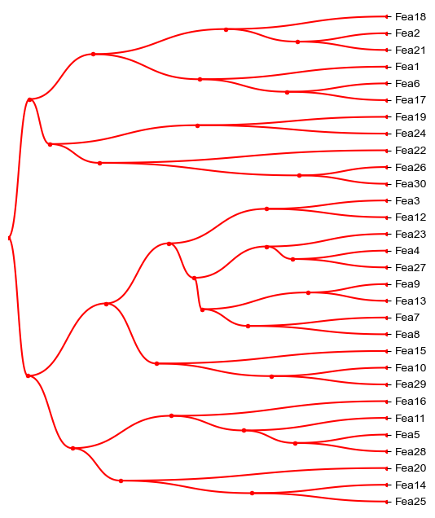
[10]:
Z = hierarchy.linkage(df_heatmap.fillna(0), metric='correlation',method='average')
# hierarchy.dendrogram(Z, labels=df_heatmap.index)
# plt.show()
dend=hierarchy.dendrogram(Z, orientation="left", labels=df_heatmap.index)
plt.show()
print(dend)
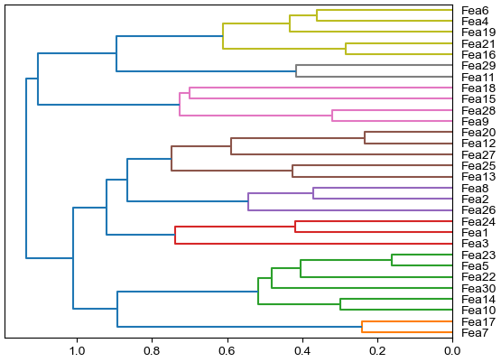
{'icoord': [[5.0, 5.0, 15.0, 15.0], [25.0, 25.0, 35.0, 35.0], [65.0, 65.0, 75.0, 75.0], [55.0, 55.0, 70.0, 70.0], [45.0, 45.0, 62.5, 62.5], [30.0, 30.0, 53.75, 53.75], [10.0, 10.0, 41.875, 41.875], [95.0, 95.0, 105.0, 105.0], [85.0, 85.0, 100.0, 100.0], [125.0, 125.0, 135.0, 135.0], [115.0, 115.0, 130.0, 130.0], [145.0, 145.0, 155.0, 155.0], [175.0, 175.0, 185.0, 185.0], [165.0, 165.0, 180.0, 180.0], [150.0, 150.0, 172.5, 172.5], [122.5, 122.5, 161.25, 161.25], [92.5, 92.5, 141.875, 141.875], [25.9375, 25.9375, 117.1875, 117.1875], [195.0, 195.0, 205.0, 205.0], [215.0, 215.0, 225.0, 225.0], [200.0, 200.0, 220.0, 220.0], [235.0, 235.0, 245.0, 245.0], [255.0, 255.0, 265.0, 265.0], [285.0, 285.0, 295.0, 295.0], [275.0, 275.0, 290.0, 290.0], [260.0, 260.0, 282.5, 282.5], [240.0, 240.0, 271.25, 271.25], [210.0, 210.0, 255.625, 255.625], [71.5625, 71.5625, 232.8125, 232.8125]], 'dcoord': [[0.0, 0.24018272565118937, 0.24018272565118937, 0.0], [0.0, 0.2976427736510533, 0.2976427736510533, 0.0], [0.0, 0.16111700603156465, 0.16111700603156465, 0.0], [0.0, 0.4038317269873088, 0.4038317269873088, 0.16111700603156465], [0.0, 0.4806768728379856, 0.4806768728379856, 0.4038317269873088], [0.2976427736510533, 0.5171460786539102, 0.5171460786539102, 0.4806768728379856], [0.24018272565118937, 0.8930533678108117, 0.8930533678108117, 0.5171460786539102], [0.0, 0.4181747185669227, 0.4181747185669227, 0.0], [0.0, 0.7381860620089075, 0.7381860620089075, 0.4181747185669227], [0.0, 0.37104918876244053, 0.37104918876244053, 0.0], [0.0, 0.5445325378531125, 0.5445325378531125, 0.37104918876244053], [0.0, 0.42659959903065603, 0.42659959903065603, 0.0], [0.0, 0.23411036150497433, 0.23411036150497433, 0.0], [0.0, 0.5900477740522605, 0.5900477740522605, 0.23411036150497433], [0.42659959903065603, 0.7476673539258867, 0.7476673539258867, 0.5900477740522605], [0.5445325378531125, 0.8655236983006495, 0.8655236983006495, 0.7476673539258867], [0.7381860620089075, 0.9218572429578666, 0.9218572429578666, 0.8655236983006495], [0.8930533678108117, 1.0103508024229984, 1.0103508024229984, 0.9218572429578666], [0.0, 0.3204648011279123, 0.3204648011279123, 0.0], [0.0, 0.7001782923549389, 0.7001782923549389, 0.0], [0.3204648011279123, 0.7259017052468889, 0.7259017052468889, 0.7001782923549389], [0.0, 0.4159554584077476, 0.4159554584077476, 0.0], [0.0, 0.28303092106801364, 0.28303092106801364, 0.0], [0.0, 0.3610029440899617, 0.3610029440899617, 0.0], [0.0, 0.43337634144926057, 0.43337634144926057, 0.3610029440899617], [0.28303092106801364, 0.6113548199440938, 0.6113548199440938, 0.43337634144926057], [0.4159554584077476, 0.8948523328659082, 0.8948523328659082, 0.6113548199440938], [0.7259017052468889, 1.1036315569772859, 1.1036315569772859, 0.8948523328659082], [1.0103508024229984, 1.1361251608038871, 1.1361251608038871, 1.1036315569772859]], 'ivl': ['Fea7', 'Fea17', 'Fea10', 'Fea14', 'Fea30', 'Fea22', 'Fea5', 'Fea23', 'Fea3', 'Fea1', 'Fea24', 'Fea26', 'Fea2', 'Fea8', 'Fea13', 'Fea25', 'Fea27', 'Fea12', 'Fea20', 'Fea9', 'Fea28', 'Fea15', 'Fea18', 'Fea11', 'Fea29', 'Fea16', 'Fea21', 'Fea19', 'Fea4', 'Fea6'], 'leaves': [6, 16, 9, 13, 29, 21, 4, 22, 2, 0, 23, 25, 1, 7, 12, 24, 26, 11, 19, 8, 27, 14, 17, 10, 28, 15, 20, 18, 3, 5], 'color_list': ['C1', 'C2', 'C2', 'C2', 'C2', 'C2', 'C0', 'C3', 'C3', 'C4', 'C4', 'C5', 'C5', 'C5', 'C5', 'C0', 'C0', 'C0', 'C6', 'C6', 'C6', 'C7', 'C8', 'C8', 'C8', 'C8', 'C0', 'C0', 'C0'], 'leaves_color_list': ['C1', 'C1', 'C2', 'C2', 'C2', 'C2', 'C2', 'C2', 'C3', 'C3', 'C3', 'C4', 'C4', 'C4', 'C5', 'C5', 'C5', 'C5', 'C5', 'C6', 'C6', 'C6', 'C6', 'C7', 'C7', 'C8', 'C8', 'C8', 'C8', 'C8']}
[11]:
Z = hierarchy.linkage(df_heatmap.fillna(0).T, metric='correlation',method='average')
dend=hierarchy.dendrogram(Z, orientation="top", labels=df_heatmap.columns)
ax=plt.gca()
plt.xticks(rotation=-45, ha='left')
# ax.tick_params(axis='x', labelrotation=-90)
plt.show()
print(dend)
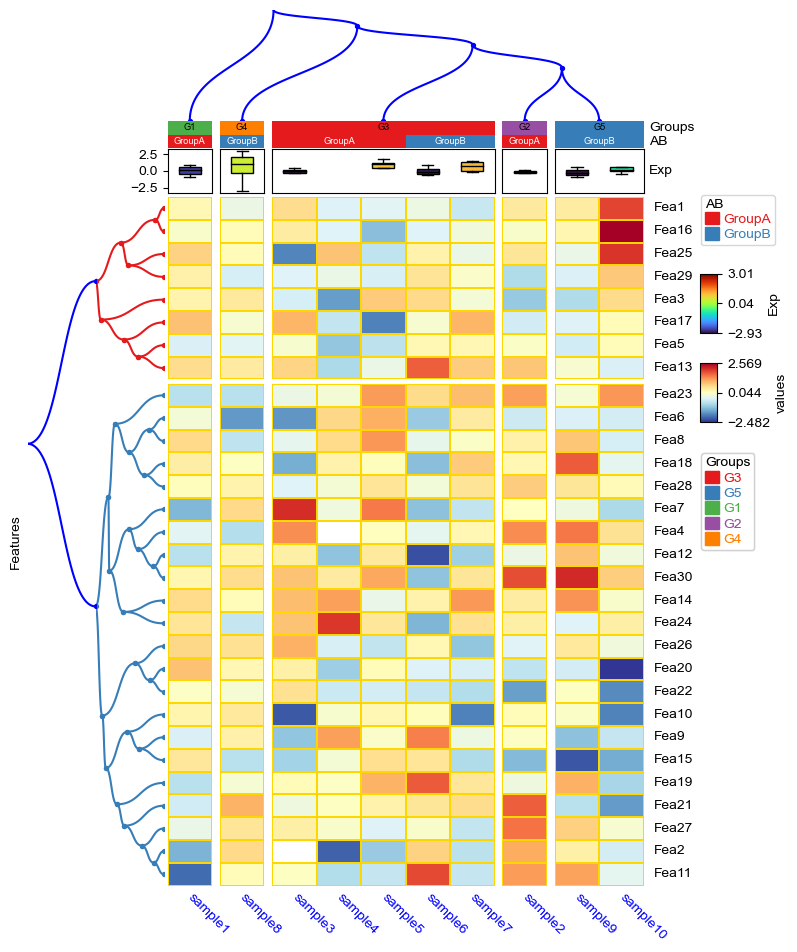
{'icoord': [[15.0, 15.0, 25.0, 25.0], [5.0, 5.0, 20.0, 20.0], [35.0, 35.0, 45.0, 45.0], [55.0, 55.0, 65.0, 65.0], [85.0, 85.0, 95.0, 95.0], [75.0, 75.0, 90.0, 90.0], [60.0, 60.0, 82.5, 82.5], [40.0, 40.0, 71.25, 71.25], [12.5, 12.5, 55.625, 55.625]], 'dcoord': [[0.0, 0.7960382998871358, 0.7960382998871358, 0.0], [0.0, 0.9126695845557546, 0.9126695845557546, 0.7960382998871358], [0.0, 0.771173177951199, 0.771173177951199, 0.0], [0.0, 0.8323681329461097, 0.8323681329461097, 0.0], [0.0, 0.7089135989123398, 0.7089135989123398, 0.0], [0.0, 0.9040539875728044, 0.9040539875728044, 0.7089135989123398], [0.8323681329461097, 1.0100102254434757, 1.0100102254434757, 0.9040539875728044], [0.771173177951199, 1.0269941172211454, 1.0269941172211454, 1.0100102254434757], [0.9126695845557546, 1.0792948483578186, 1.0792948483578186, 1.0269941172211454]], 'ivl': ['sample3', 'sample2', 'sample5', 'sample7', 'sample8', 'sample4', 'sample6', 'sample1', 'sample9', 'sample10'], 'leaves': [2, 1, 4, 6, 7, 3, 5, 0, 8, 9], 'color_list': ['C0', 'C0', 'C0', 'C0', 'C1', 'C0', 'C0', 'C0', 'C0'], 'leaves_color_list': ['C0', 'C0', 'C0', 'C0', 'C0', 'C0', 'C0', 'C0', 'C1', 'C1']}
anno_label¶
[12]:
#Generate example dataset (random)
df = pd.DataFrame(['GroupA'] * 5 + ['GroupB'] * 5, columns=['AB'])
df['CD'] = ['C'] * 3 + ['D'] * 3 + ['G'] * 4
df['EF'] = ['E'] * 6 + ['F'] * 2 + ['H'] * 2
df['F'] = np.random.normal(0, 1, 10)
df.index = ['sample' + str(i) for i in range(1, df.shape[0] + 1)]
df_box = pd.DataFrame(np.random.randn(10, 4), columns=['Gene' + str(i) for i in range(1, 5)])
df_box.index = ['sample' + str(i) for i in range(1, df_box.shape[0] + 1)]
df_bar = pd.DataFrame(np.random.uniform(0, 10, (10, 2)), columns=['TMB1', 'TMB2'])
df_bar.index = ['sample' + str(i) for i in range(1, df_box.shape[0] + 1)]
df_scatter = pd.DataFrame(np.random.uniform(0, 10, 10), columns=['Scatter'])
df_scatter.index = ['sample' + str(i) for i in range(1, df_box.shape[0] + 1)]
df_heatmap = pd.DataFrame(np.random.randn(30, 10), columns=['sample' + str(i) for i in range(1, 11)])
df_heatmap.index = ["Fea" + str(i) for i in range(1, df_heatmap.shape[0] + 1)]
df_heatmap.iloc[1, 2] = np.nan
[13]:
#Annotate the rows with average > 0.3
df_rows = df_heatmap.apply(lambda x:x.name if x.sample4 > 0.5 else None,axis=1)
df_rows=df_rows.to_frame(name='Selected')
df_rows['XY']=df_rows.index.to_series().apply(lambda x:'A' if int(x.replace('Fea',''))>=15 else 'B')
row_ha = HeatmapAnnotation(
S4=anno_simple(df_heatmap.sample4.apply(lambda x:round(x,2)),
add_text=True,height=10,
text_kws={'rotation':0,'fontsize':10,'color':'black'}),
# Scatter=anno_scatterplot(df_heatmap.sample4.apply(lambda x:round(x,2)),
# height=10),
Test=anno_barplot(df_heatmap.sample4.apply(lambda x:round(x,2)),
height=18,cmap='rainbow'),
selected=anno_label(df_rows,colors='red',height=20,extend=True),
axis=0,verbose=0,#wgap=4,
label_kws={'rotation':0,'horizontalalignment':'left',
'verticalalignment':'bottom'})
plt.figure(figsize=(6, 8))
cm = ClusterMapPlotter(
data=df_heatmap,right_annotation=row_ha,
col_split=df.AB,
# row_split=df_rows.XY,
#col_split_gap=3.5,row_split_gap=2.5,
col_cluster=True,row_cluster=True,
label='values',row_dendrogram=False,
show_rownames=True,show_colnames=True,
verbose=0,legend_gap=5,#legend_hpad=10,legend_vpad=5,
linewidths=0.05,linecolor='gold',cmap='RdYlBu_r',
xticklabels_kws={'labelrotation':-45,'labelcolor':'blue'},
yticklabels_kws=dict(labelcolor='red'),#subplot_gap=8
)
ax=cm.right_annotation.annotations[2].ax
for side in ["top", "right", "left", "bottom"]:
ax.set_axis_on()
ax.spines[side].set_visible(True)
ax.spines[side].set_color('red')
ax.spines[side].set_linewidth(2)
ax.spines[side].set_linestyle('--')
ax.tick_params(axis="y", which="both", bottom=True, labelbottom=True,left=False,labelleft=False,right=True,labelright=True)
ax.yaxis.tick_right()
ax.yaxis.set_visible(True)
plt.show()
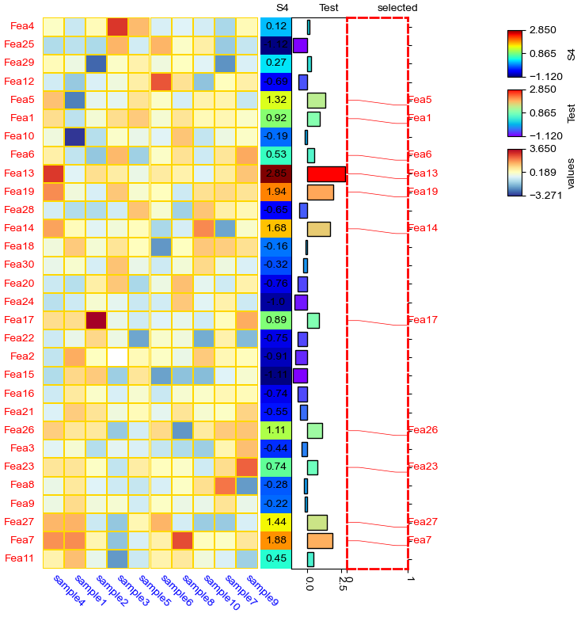
[14]:
row_ha = HeatmapAnnotation(
selected=anno_label(df_rows,colors='red',height=20),
Test=anno_barplot(df_heatmap.sample4.apply(lambda x:round(x,2) if x > 0 else None),
height=30,cmap='rainbow'),
axis=0,verbose=0,#wgap=4,
label_kws={'rotation':0,'horizontalalignment':'left',
'verticalalignment':'bottom'})
plt.figure(figsize=(6, 8))
cm = ClusterMapPlotter(
data=df_heatmap, left_annotation=row_ha,
col_split=df.AB,
row_split=df_rows.XY,
#col_split_gap=3.5,row_split_gap=2.5,
col_cluster=True,row_cluster=True,
label='values',row_dendrogram=False,
show_rownames=True,show_colnames=True,row_names_side='right',
verbose=0,legend_gap=5,#legend_hpad=10,legend_vpad=5,
linewidths=0.05,linecolor='gold',cmap='RdYlBu_r',
xticklabels_kws={'labelrotation':-45,'labelcolor':'blue'},
yticklabels_kws=dict(labelcolor='red'),#subplot_gap=8
)
for ax in cm.left_annotation.axes.flatten():
for side in ["top", "right", "left", "bottom"]:
ax.set_axis_on()
ax.spines[side].set_visible(True)
ax.spines[side].set_color('red')
ax.spines[side].set_linewidth(1)
ax.spines[side].set_linestyle('--')
plt.show()
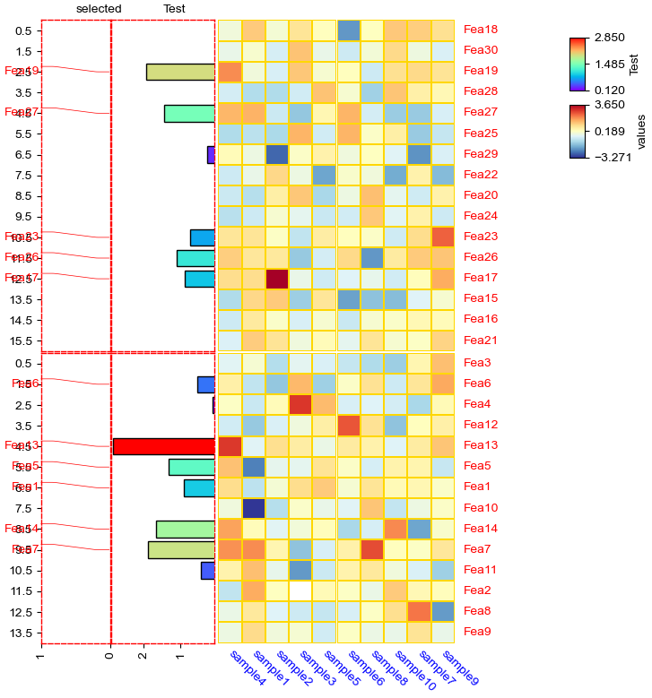
[15]:
row_ha = HeatmapAnnotation(
selected=anno_label(df_rows,colors='red',rotation=90),
S4=anno_simple(df_heatmap.sample4.apply(lambda x:round(x,2)),
height=4),
Test=anno_barplot(df_heatmap.sample4.apply(lambda x:round(x,2)),
height=8,cmap='rainbow'),
axis=1,verbose=0,#wgap=4,
label_kws={'rotation':0,'horizontalalignment':'left',
'verticalalignment':'bottom'})
plt.figure(figsize=(8, 6))
cm = ClusterMapPlotter(
data=df_heatmap.T, top_annotation=row_ha,
row_split=df.AB,
col_split=df_rows.XY,
#col_split_gap=3.5,row_split_gap=2.5,
col_cluster=True,row_cluster=True,
label='values',row_dendrogram=False,
show_rownames=True,show_colnames=True,row_names_side='right',
verbose=0,legend_gap=5,#legend_hpad=10,legend_vpad=5,
linewidths=0.05,linecolor='gold',cmap='RdYlBu_r',
xticklabels_kws={'labelrotation':-45,'labelcolor':'blue'},
yticklabels_kws=dict(labelcolor='red'),#subplot_gap=8
)
plt.show()
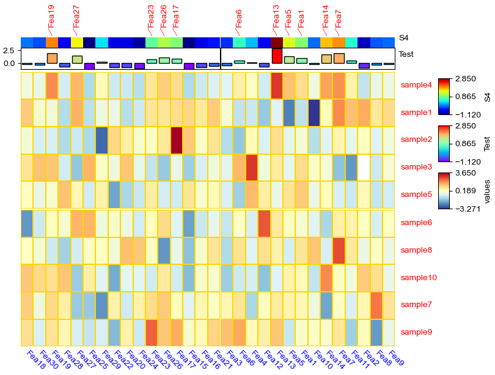
[16]:
col_ha = HeatmapAnnotation(
S4=anno_simple(df_heatmap.sample4.apply(lambda x:round(x,2)),
height=4),
Test=anno_barplot(df_heatmap.sample4.apply(lambda x:round(x,2)),
height=8,cmap='rainbow'),
selected=anno_label(df_rows,colors='red',relpos=(0.7,1),height=15,extend=True),
axis=1,verbose=0,#wgap=4,
label_kws={'rotation':0,'horizontalalignment':'left',
'verticalalignment':'bottom'})
plt.figure(figsize=(8, 6))
cm = ClusterMapPlotter(
data=df_heatmap.T, bottom_annotation=col_ha,
row_split=df.AB,
col_split=df_rows.XY,
col_split_gap=3.5,row_split_gap=2.5,
col_cluster=True,row_cluster=True,
label='values',row_dendrogram=False,
show_rownames=True,show_colnames=True,row_names_side='right',
verbose=0,legend_gap=5,#legend_hpad=10,legend_vpad=5,
linewidths=0.05,linecolor='gold',cmap='RdYlBu_r',
xticklabels_kws={'labelrotation':45,'labelcolor':'blue'},
yticklabels_kws=dict(labelcolor='red'),#subplot_gap=8
)
ax=cm.bottom_annotation.annotations[2].ax
for side in ["top", "right", "left", "bottom"]:
ax.set_axis_on()
ax.spines[side].set_visible(True)
ax.spines[side].set_color('red')
ax.spines[side].set_linewidth(1)
ax.spines[side].set_linestyle('--')
plt.show()
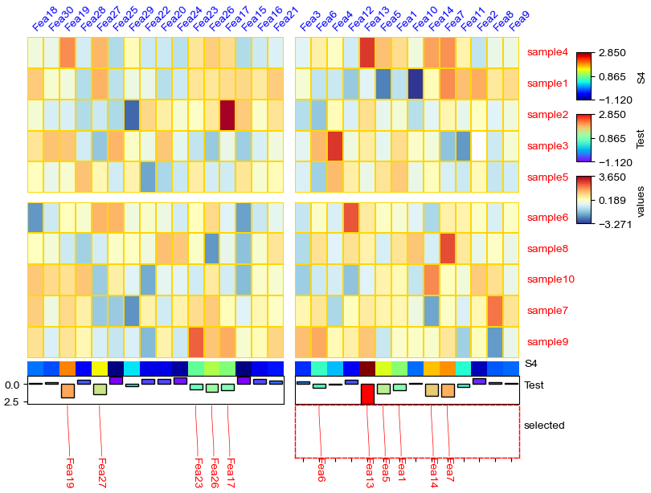
anno_img¶
[17]:
import matplotlib.image as mpimg
img=mpimg.imread("1.jpeg")
# img=mpimg.imread("2.png")
plt.imshow(img)
print(img.shape)
print(img.T.shape)
(256, 256, 3)
(3, 256, 256)
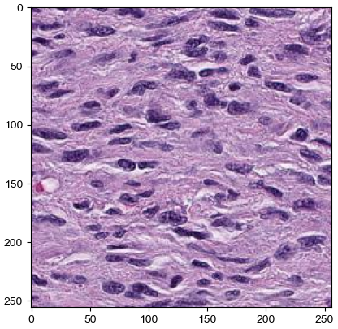
[18]:
import PIL
import requests
from io import BytesIO
url="https://motifcollections.aertslab.org/v10nr_clust/logos/taipale_cyt_meth__POU5F1_NYTAATTATGCGNRN_FL_meth_repr.png"
response = requests.get(url)
# Open the image from bytes
image = PIL.Image.open(BytesIO(response.content))
# image=PIL.ImageOps.invert(image)
if image.mode != 'RGBA':
image = image.convert('RGB')
print(image.height,image.width)
image = np.array(image)
plt.imshow(image)
print(image.shape)
print(image.T.shape)
199 399
(199, 399, 3)
(3, 399, 199)
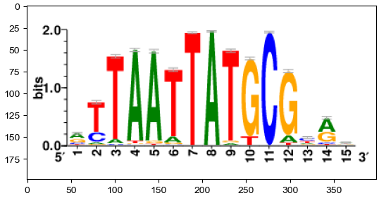
extent¶
[19]:
img=mpimg.imread("2.png")
plt.xlim(0,500)
plt.ylim(0,300)
plt.imshow(img,extent=[0,240,0,250])
ax=plt.gca()
# ax.invert_yaxis()
print(img.shape)
print(img.T.shape)
(199, 399, 4)
(4, 399, 199)
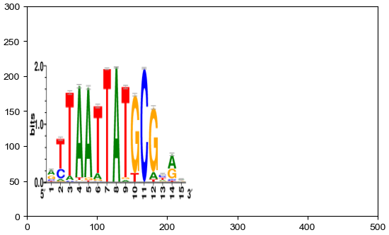
Direction of imshow: top -> bottom, left -> right The first dimension (height) is Y, the second dimension is X (width)
[20]:
df = pd.DataFrame(['AAAA1'] * 5 + ['BBBBB2'] * 5, columns=['AB'])
df['CD'] = ['C'] * 3 + ['D'] * 3 + ['G'] * 4
df['F'] = np.random.normal(0, 1, 10)
df.index = ['sample' + str(i) for i in range(1, df.shape[0] + 1)]
df_box = pd.DataFrame(np.random.randn(10, 4), columns=['Gene' + str(i) for i in range(1, 5)])
df_box.index = ['sample' + str(i) for i in range(1, df_box.shape[0] + 1)]
df_bar = pd.DataFrame(np.random.uniform(0, 10, (10, 2)), columns=['TMB1', 'TMB2'])
df_bar.index = ['sample' + str(i) for i in range(1, df_box.shape[0] + 1)]
df_scatter = pd.DataFrame(np.random.uniform(0, 10, 10), columns=['Scatter'])
df_scatter.index = ['sample' + str(i) for i in range(1, df_box.shape[0] + 1)]
df_bar1 = pd.DataFrame(np.random.uniform(0, 10, (10, 2)), columns=['T1-A', 'T1-B'])
df_bar1.index = ['sample' + str(i) for i in range(1, df_box.shape[0] + 1)]
df_bar2 = pd.DataFrame(np.random.uniform(0, 10, (10, 2)), columns=['T2-A', 'T2-B'])
df_bar2.index = ['sample' + str(i) for i in range(1, df_box.shape[0] + 1)]
df_bar3 = pd.DataFrame(np.random.uniform(0, 10, (10, 2)), columns=['T3-A', 'T3-B'])
df_bar3.index = ['sample' + str(i) for i in range(1, df_box.shape[0] + 1)]
df_bar3.iloc[5,0]=np.nan
df_bar4 = pd.DataFrame(np.random.uniform(0, 10, (10, 1)), columns=['T4'])
df_bar4.index = ['sample' + str(i) for i in range(1, df_box.shape[0] + 1)]
df_bar4.iloc[7,0]=np.nan
df_img = pd.DataFrame(
['https://upload.wikimedia.org/wikipedia/commons/thumb/c/c3/Python-logo-notext.svg/121px-Python-logo-notext.svg.png',
'https://motifcollections.aertslab.org/v10nr_clust/logos/metacluster_135.7.png',
'https://cdn3.iconfinder.com/data/icons/family-member-flat-happy-family-day/512/Brother-512.png',
'https://cdn3.iconfinder.com/data/icons/family-member-flat-happy-family-day/512/Sister-512.png',
'https://img.freepik.com/free-vector/sticker-design-with-cute-mouse-isolated_1308-59360.jpg',
'https://motifcollections.aertslab.org/v10nr_clust/logos/metacluster_131.8.png',
'https://img.freepik.com/premium-vector/vector-illustration-gorilla-isolated-white-background-cartoon-style_1151-66575.jpg',
"2.png",'1.jpeg',
'https://upload.wikimedia.org/wikipedia/commons/thumb/c/c3/Python-logo-notext.svg/121px-Python-logo-notext.svg.png'],
columns=['path'])
# df_img = pd.DataFrame(
# ["2.png",'1.jpeg']*5, columns=['path'])
df_img.index = ['sample' + str(i) for i in range(1, df_box.shape[0] + 1)]
[21]:
plt.figure(figsize=(10, 5))
col_ha = HeatmapAnnotation(
label=anno_label(df.AB, merge=True,rotation=15),
AB=anno_simple(df.AB,add_text=True,legend=True), axis=1,
CD=anno_simple(df.CD, add_text=True,legend=True,text_kws={'color':'black'}),
Exp=anno_boxplot(df_box, cmap='turbo',legend=True),
Scatter=anno_scatterplot(df_scatter),
Bar1=anno_barplot(df_bar1,legend=True,cmap='Dark2'),
Bar4=anno_barplot(df_bar4,legend=True,cmap='turbo'),
Img=anno_img(df_img.path),
plot=True,legend=True,legend_gap=5,hgap=0.5)
col_ha.show_ticklabels(df.index.tolist(),fontdict={'color':'blue'},rotation=-30)
plt.show()
Starting plotting HeatmapAnnotations
Collecting annotation legends..
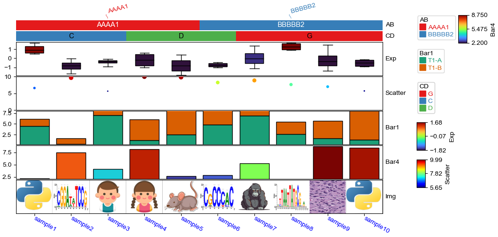
[22]:
plt.figure(figsize=(8, 6))
col_ha = HeatmapAnnotation(
AB=anno_simple(df.AB,add_text=True,legend=True),
CD=anno_simple(df.CD, add_text=True,legend=True,text_kws={'color':'black'}),
Exp=anno_boxplot(df_box, cmap='turbo',legend=True),
Scatter=anno_scatterplot(df_scatter),
Bar1=anno_barplot(df_bar1,legend=True,cmap='Dark2'),
Img=anno_img(df_img.path),
Bar4=anno_barplot(df_bar4,legend=True,cmap='turbo'),
plot=True,legend=True,legend_gap=5,hgap=0.5, axis=0,orientation='right',legend_hpad=15)
col_ha.show_ticklabels(df.index.tolist(),fontdict={'color':'blue'}) #rotation
ax=col_ha.annotations[-2].ax
ax.xaxis.set_visible(True) # show ticks
ax.tick_params(
axis="x", which="both", bottom=True, labelbottom=True
)
for side in ["top", "right", "left", "bottom"]:
ax.set_axis_on()
ax.spines[side].set_visible(True)
ax.spines[side].set_color('red')
ax.spines[side].set_linewidth(1)
ax.spines[side].set_linestyle('--')
plt.show()
Starting plotting HeatmapAnnotations
Collecting annotation legends..
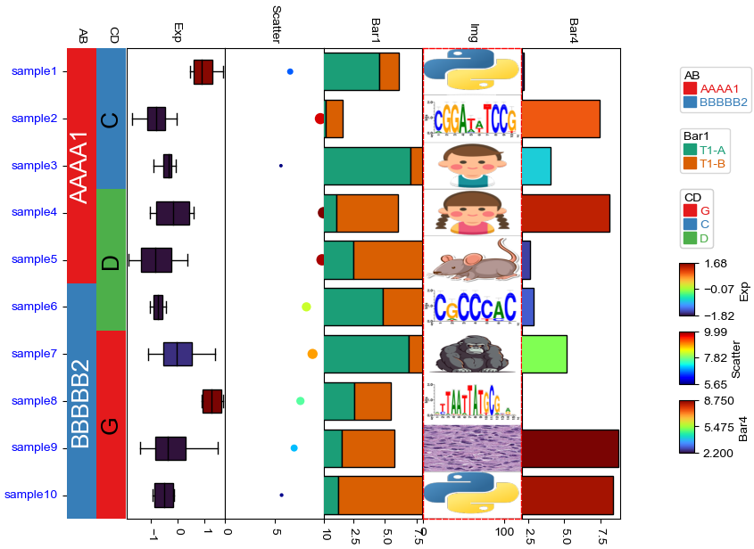
[23]:
plt.figure(figsize=(8, 6))
col_ha = HeatmapAnnotation(
Img=anno_img(df_img.path),
AB=anno_simple(df.AB,add_text=True,legend=True),
CD=anno_simple(df.CD, add_text=True,legend=True,text_kws={'color':'black'}),
Exp=anno_boxplot(df_box, cmap='turbo',legend=True),
Scatter=anno_scatterplot(df_scatter),
Bar1=anno_barplot(df_bar1,legend=True,cmap='Dark2'),
Bar4=anno_barplot(df_bar4,legend=True,cmap='turbo'),
plot=True,legend=True,legend_gap=5,hgap=0.5, axis=0,orientation='left',legend_hpad=15)
col_ha.show_ticklabels(df.index.tolist(),fontdict={'color':'blue'}) #rotation
ax=col_ha.annotations[0].ax
ax.xaxis.set_visible(True) # show ticks
ax.tick_params(
axis="x", which="both", bottom=True, labelbottom=True
)
for side in ["top", "right", "left", "bottom"]:
ax.set_axis_on()
ax.spines[side].set_visible(True)
ax.spines[side].set_color('red')
ax.spines[side].set_linewidth(1)
ax.spines[side].set_linestyle('--')
plt.show()
Starting plotting HeatmapAnnotations
Collecting annotation legends..
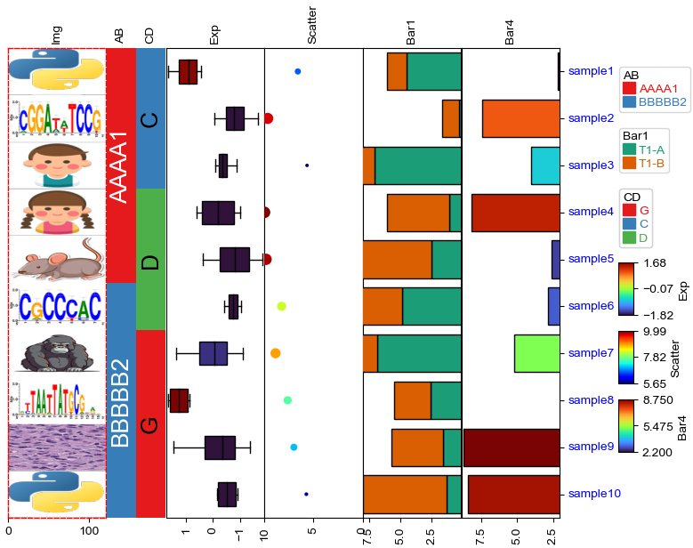
Color palette design¶
[269]:
import matplotlib.pyplot as plt
import colorsys
import numpy as np
from matplotlib import colors as mcolors
named_colors=mcolors.CSS4_COLORS
named_colors.update(mcolors.BASE_COLORS) #kes is color string, values are hex
# named_colors.update(mcolors.TABLEAU_COLORS)
named_colors.update(mcolors.CSS4_COLORS)
for k in named_colors:
if isinstance(named_colors[k],tuple):
named_colors[k]=mcolors.to_hex(named_colors[k])
def identify_color_format(color):
if color in named_colors:
return 'named_color'
# Check if the color is in HEX format (e.g., #RRGGBB or #RGB)
elif isinstance(color, str) and color.startswith('#'):
if len(color) == 7 or len(color) == 4:
return 'HEX'
# Check if the color is in RGB format (tuple of 3 integers/floats)
elif isinstance(color, tuple) and len(color) == 3:
if all(isinstance(val, int) and 0 <= val <= 255 for val in color):
return 'RGB (integer)'
elif all(isinstance(val, float) and 0 <= val <= 1 for val in color):
return 'RGB (float)'
# Check if the color is in HLS format (tuple of 3 floats)
elif isinstance(color, tuple) and len(color) == 3:
h, l, s = color
if (isinstance(h, float) and 0 <= h <= 1) or (isinstance(h, int) and 0 <= h <= 360):
if isinstance(l, float) and 0 <= l <= 1 and isinstance(s, float) and 0 <= s <= 1:
return 'HLS'
return 'Unknown'
def generate_similar_colors(base_color, num_colors=5, h_delta=1/6, l_delta=0.4, s_delta=0.4,
l_min=0.2,l_max=0.8,s_min=0.2,s_max=0.8):
fmt=identify_color_format(base_color)
if not fmt.startswith('RGB'):
base_color=mcolors.to_rgb(base_color)
# Convert the base RGB color to HLS (Hue, Lightness, Saturation)
r, g, b = base_color
h, l, s = colorsys.rgb_to_hls(r, g, b)
# Generate a list of similar colors by varying the hue
# The hue determines the "base" color:
# 0 or 1 (or 360 degrees) = Red
# 1/6 (or 60 degrees) = Yellow
# 2/6 (or 120 degrees) = Green
# 3/6 (or 180 degrees) = Cyan
# 4/6 (or 240 degrees) = Blue
# 5/6 (or 300 degrees) = Magenta
# Back to Red as it cycles around the wheel.
colors = []
hues=np.linspace(max(h-h_delta,0),min(h+h_delta,1),num_colors)
lightness=np.linspace(max(l-l_delta,l_min),min(l+l_delta,l_max),num_colors)
saturations=np.linspace(max(s-s_delta,s_min),min(s+s_delta,s_max),num_colors)
for h1,l1,s1 in zip(hues,lightness,saturations):
new_color = colorsys.hls_to_rgb(h1, l1, s1)
colors.append(new_color)
return colors
def interpolate_colors(color1, color2, num_colors,fmt='rgb'):
if fmt=='hls':
color1=colorsys.hls_to_rgb(*color1)
color2=colorsys.hls_to_rgb(*color2)
elif fmt!='rgb':
color1=mcolors.to_rgb(color1)
color2=mcolors.to_rgb(color2)
# Convert colors to numpy arrays for easy interpolation
color1 = np.array(color1)
color2 = np.array(color2)
# Generate a linear interpolation between the two colors
colors = [tuple(color1 + (color2 - color1) * i / (num_colors - 1)) for i in range(num_colors)]
return colors
def generate_quantive_colors(color,n=5,white=(0.9,0.9,0.9),black=(0.3,0.3,0.3),ret_fmt='hex'):
fmt=identify_color_format(color)
if not fmt.startswith('RGB'):
color=mcolors.to_rgb(color)
light_colors=interpolate_colors(white,color,n//2 + 2)[1:-1] # from white to color
dark_colors=interpolate_colors(color,black,n//2 + 2)[1:-1] # from color to black;white=(1,1,1),black=(0,0,0)
if len(light_colors)+len(dark_colors) == n:
results=light_colors+dark_colors
else:
results=light_colors+[color]+dark_colors
if ret_fmt=='rgb':
return results
elif ret_fmt=='hex':
return [mcolors.to_hex(c) for c in results]
[236]:
# Step 3: Plot the generated colors
def plot_colors(colors):
fig, ax = plt.subplots(1, figsize=(10, 1), subplot_kw=dict(xticks=[], yticks=[]))
for i, color in enumerate(colors):
ax.add_patch(plt.Rectangle((i, 0), 1, 1, color=color))
plt.xlim(0, len(colors))
plt.show()
[238]:
similar_colors = generate_similar_colors('red', num_colors=10) ## Light blue
# Plot the generated similar colors
plot_colors(similar_colors)
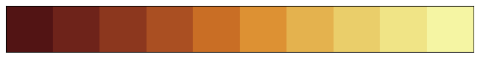
[242]:
similar_colors=interpolate_colors('red','white',3,fmt='named_color')
plot_colors(similar_colors)
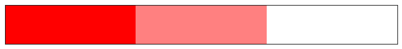
[270]:
similar_colors=generate_quantive_colors('orange',n=10)
plot_colors(similar_colors)
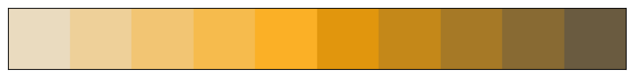
[271]:
similar_colors=generate_quantive_colors('blue',n=5)
plot_colors(similar_colors)
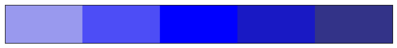
[272]:
similar_colors=generate_quantive_colors('skyblue',n=5)
plot_colors(similar_colors)
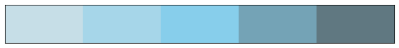
[273]:
similar_colors=generate_quantive_colors('green',n=5)
plot_colors(similar_colors)
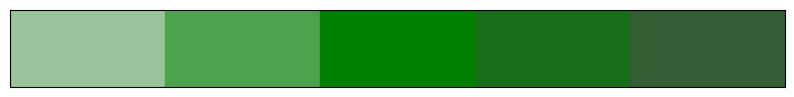
[274]:
similar_colors
[274]:
['#99c499', '#4da24d', '#008000', '#196f19', '#335e33']
[263]:
plot_colors([(1,1,1),(0.9,0.9,0.9),(0.4,0.4,0.4),(0.3,0.3,0.3),(0.2,0.2,0.2),(0,0,0)])
[130]:
mcolors.to_rgb(())
[130]:
(1.0, 0.0, 0.0)
[247]:
mcolors.to_rgb('black')
[247]:
(0.0, 0.0, 0.0)
[128]:
colorsys.rgb_to_hls(*mcolors.to_rgb('red'))
[128]:
(0.0, 0.5, 1.0)
[129]:
colorsys.rgb_to_hls(*mcolors.to_rgb('pink'))
[129]:
(0.9708994708994709, 0.8764705882352941, 1.0)
[267]:
mcolors.to_hex((0.0, 0.0, 0.0))
[267]:
'#000000'